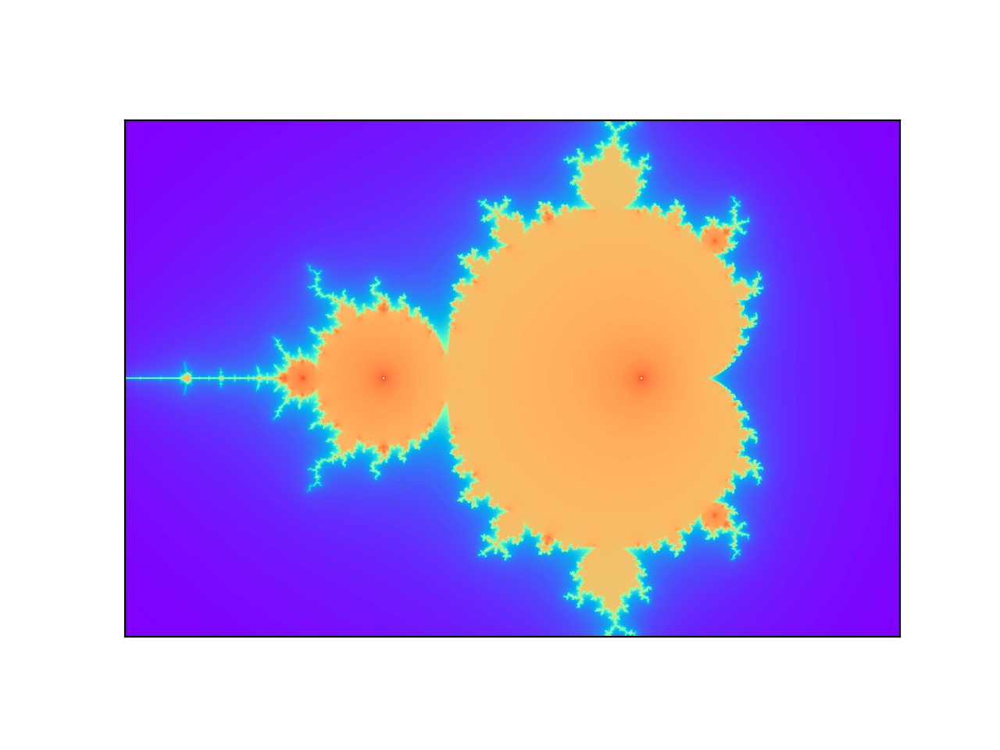

Raspberry Pi 4 + k3s + Rayで分散処理を試す
はじめに
Raspberry Pi 4+k3s+rayでクラスタを作成して，分散処理の実験を行います．Raspberry Pi 4 には事前にUbuntu 20.04を導入しておきます．
cgroupの有効化
残念ながら，このcgroupの設定が何故必要なのかを理解できていません．しかしながら，Webで調べた限りでは，必要そうなので設定することにします．（設定しない場合はどうなるかを試してはいません）
SDカードをホストマシンにマウントして以下のコマンド実行します．以下の例では，/Vlumes/system-bootにSDカードがマウントされています．マウントポイントについては，環境に応じて適切に書き換えてください．
$ sed -i -e 's/$/ cgroup_memory=1 cgroup_enable=memory cgroup_enable=cpuset/' /Volumes/system-boot/cmdline.txt 修正したSDカードを用いてシステムを起動します．その後，以下のコマンドで設定の反映を確認できます．
$ cat /proc/cgroups
#subsys_name hierarchy num_cgroups enabled
cpuset 5 10 1
cpu 4 98 1
cpuacct 4 98 1
blkio 8 98 1
memory 2 147 1
devices 11 98 1
freezer 9 11 1
net_cls 6 10 1
perf_event 7 10 1
net_prio 6 10 1
pids 10 106 1
rdma 3 1 1 k3sの導入
リポジトリの手順に従います．注意が必要な点は，マスターノードとワーカーノードとで導入方法が異なる点です．ここでハマらなければ，さくっと導入できると思います．今回，以下の様にマスターノードx1，ワーカーノードx3でk3sクラスタを構成しました．
$ kubectl get nodes
NAME STATUS ROLES AGE VERSION
k3s-node3 Ready worker 3d12h v1.18.2+k3s1
k3s-node2 Ready worker 3d12h v1.18.2+k3s1
k3s-node1 Ready worker 3d12h v1.18.2+k3s1
k3s-master Ready master 3d18h v1.18.2+k3s1rayクラスタのデプロイ
こちらも公式の手順に従います．しかしながら，こちらで使用しているDockerイメージはamd64向けに作成された物であり，aarch64環境では動作しません．そこで，ほぼ等価なイメージをaarch64向けに作成しました．今回は，このイメージを用いてクラスタを作成します．具体的には，ray-cluster.yamlを以下の様に修正します．
diff --git a/doc/kubernetes/ray-cluster.yaml b/doc/kubernetes/ray-cluster.yaml
index 853f9dfb2..0563c934f 100644
--- a/doc/kubernetes/ray-cluster.yaml
+++ b/doc/kubernetes/ray-cluster.yaml
@@ -59,7 +59,7 @@ spec:
medium: Memory
containers:
- name: ray-head
- image: rayproject/autoscaler
+ image: ar90n/autoscaler-py37
imagePullPolicy: Always
command: [ "/bin/bash", "-c", "--" ]
args:
@@ -120,7 +120,7 @@ spec:
medium: Memory
containers:
- name: ray-worker
- image: rayproject/autoscaler
+ image: ar90n/autoscaler-py37
imagePullPolicy: Always
command: ["/bin/bash", "-c", "--"]
args:以下のようにコンテナをデプロイします．
$ kubectl create -f ray/doc/kubernetes/ray-namespace.yaml
namespace/ray created
$ kubectl apply -f ray/doc/kubernetes/ray-cluster.yaml
service/ray-head created
deployment.apps/ray-head created
deployment.apps/ray-worker created
$ kubectl -n ray get pods
NAME READY STATUS RESTARTS AGE
ray-head-7957ff48b6-tj6z2 1/1 Running 0 118s
ray-worker-7574c9d77-bs4dx 1/1 Running 0 118s
ray-worker-7574c9d77-2868n 1/1 Running 1 118s
ray-worker-7574c9d77-x48m7 1/1 Running 0 118sクラスタの作成が完了したので，テストプログラムを実行します．こちらも公式の手順に従い，example.pyを実行します．
$ kubectl -n ray cp ray/doc/kubernetes/example.py ray-head-7957ff48b6-tj6z2:/example.py
$ kubectl -n ray exec ray-head-7957ff48b6-tj6z2 -- python example.py
2020-05-24 14:13:54,824 WARNING worker.py:809 -- When connecting to an existing cluster, _internal_config must match the cluster's _internal_config.
Iteration 0
Counter({('ray-worker-7574c9d77-2868n', 'ray-head-7957ff48b6-tj6z2'): 9, ('ray-worker-7574c9d77-x48m7', 'ray-worker-7574c9d77-bs4dx'): 9, ('ray-head-7957ff48b6-tj6z2', 'ray-worker-7574c9d77-bs4dx'): 9, ('ray-worker-7574c9d77-2868n', 'ray-worker-7574c9d77-bs4dx'): 9, ('ray-head-7957ff48b6-tj6z2', 'ray-worker-7574c9d77-x48m7'): 8, ('ray-worker-7574c9d77-bs4dx', 'ray-worker-7574c9d77-bs4dx'): 8, ('ray-head-7957ff48b6-tj6z2', 'ray-head-7957ff48b6-tj6z2'): 7, ('ray-worker-7574c9d77-bs4dx', 'ray-head-7957ff48b6-tj6z2'): 7, ('ray-worker-7574c9d77-x48m7', 'ray-head-7957ff48b6-tj6z2'): 6, ('ray-head-7957ff48b6-tj6z2', 'ray-worker-7574c9d77-2868n'): 6, ('ray-worker-7574c9d77-2868n', 'ray-worker-7574c9d77-x48m7'): 5, ('ray-worker-7574c9d77-bs4dx', 'ray-worker-7574c9d77-2868n'): 5, ('ray-worker-7574c9d77-x48m7', 'ray-worker-7574c9d77-2868n'): 4, ('ray-worker-7574c9d77-x48m7', 'ray-worker-7574c9d77-x48m7'): 4, ('ray-worker-7574c9d77-2868n', 'ray-worker-7574c9d77-2868n'): 3, ('ray-worker-7574c9d77-bs4dx', 'ray-worker-7574c9d77-x48m7'): 1})
Iteration 1
Counter({('ray-head-7957ff48b6-tj6z2', 'ray-worker-7574c9d77-bs4dx'): 12, ('ray-head-7957ff48b6-tj6z2', 'ray-head-7957ff48b6-tj6z2'): 10, ('ray-worker-7574c9d77-x48m7', 'ray-worker-7574c9d77-bs4dx'): 9, ('ray-worker-7574c9d77-bs4dx', 'ray-worker-7574c9d77-bs4dx'): 9, ('ray-worker-7574c9d77-x48m7', 'ray-worker-7574c9d77-2868n'): 8, ('ray-worker-7574c9d77-bs4dx', 'ray-head-7957ff48b6-tj6z2'): 7, ('ray-worker-7574c9d77-bs4dx', 'ray-worker-7574c9d77-x48m7'): 7, ('ray-worker-7574c9d77-2868n', 'ray-head-7957ff48b6-tj6z2'): 6, ('ray-worker-7574c9d77-2868n', 'ray-worker-7574c9d77-x48m7'): 6, ('ray-head-7957ff48b6-tj6z2', 'ray-worker-7574c9d77-2868n'): 5, ('ray-worker-7574c9d77-x48m7', 'ray-head-7957ff48b6-tj6z2'): 5, ('ray-worker-7574c9d77-x48m7', 'ray-worker-7574c9d77-x48m7'): 4, ('ray-head-7957ff48b6-tj6z2', 'ray-worker-7574c9d77-x48m7'): 4, ('ray-worker-7574c9d77-2868n', 'ray-worker-7574c9d77-bs4dx'): 4, ('ray-worker-7574c9d77-bs4dx', 'ray-worker-7574c9d77-2868n'): 2, ('ray-worker-7574c9d77-2868n', 'ray-worker-7574c9d77-2868n'): 2})
Iteration 2
Counter({('ray-worker-7574c9d77-x48m7', 'ray-head-7957ff48b6-tj6z2'): 12, ('ray-head-7957ff48b6-tj6z2', 'ray-worker-7574c9d77-bs4dx'): 11, ('ray-worker-7574c9d77-2868n', 'ray-worker-7574c9d77-x48m7'): 10, ('ray-worker-7574c9d77-bs4dx', 'ray-head-7957ff48b6-tj6z2'): 9, ('ray-head-7957ff48b6-tj6z2', 'ray-worker-7574c9d77-x48m7'): 8, ('ray-head-7957ff48b6-tj6z2', 'ray-head-7957ff48b6-tj6z2'): 8, ('ray-worker-7574c9d77-bs4dx', 'ray-worker-7574c9d77-bs4dx'): 6, ('ray-worker-7574c9d77-2868n', 'ray-worker-7574c9d77-bs4dx'): 5, ('ray-worker-7574c9d77-x48m7', 'ray-worker-7574c9d77-2868n'): 5, ('ray-worker-7574c9d77-bs4dx', 'ray-worker-7574c9d77-x48m7'): 5, ('ray-worker-7574c9d77-2868n', 'ray-head-7957ff48b6-tj6z2'): 4, ('ray-worker-7574c9d77-2868n', 'ray-worker-7574c9d77-2868n'): 4, ('ray-worker-7574c9d77-x48m7', 'ray-worker-7574c9d77-x48m7'): 4, ('ray-worker-7574c9d77-bs4dx', 'ray-worker-7574c9d77-2868n'): 4, ('ray-head-7957ff48b6-tj6z2', 'ray-worker-7574c9d77-2868n'): 3, ('ray-worker-7574c9d77-x48m7', 'ray-worker-7574c9d77-bs4dx'): 2})
Iteration 3
Counter({('ray-head-7957ff48b6-tj6z2', 'ray-head-7957ff48b6-tj6z2'): 13, ('ray-head-7957ff48b6-tj6z2', 'ray-worker-7574c9d77-bs4dx'): 10, ('ray-worker-7574c9d77-bs4dx', 'ray-worker-7574c9d77-bs4dx'): 8, ('ray-worker-7574c9d77-bs4dx', 'ray-worker-7574c9d77-2868n'): 8, ('ray-worker-7574c9d77-x48m7', 'ray-worker-7574c9d77-2868n'): 7, ('ray-worker-7574c9d77-x48m7', 'ray-worker-7574c9d77-bs4dx'): 7, ('ray-worker-7574c9d77-x48m7', 'ray-worker-7574c9d77-x48m7'): 6, ('ray-worker-7574c9d77-2868n', 'ray-worker-7574c9d77-2868n'): 6, ('ray-worker-7574c9d77-2868n', 'ray-worker-7574c9d77-x48m7'): 6, ('ray-worker-7574c9d77-x48m7', 'ray-head-7957ff48b6-tj6z2'): 5, ('ray-worker-7574c9d77-bs4dx', 'ray-worker-7574c9d77-x48m7'): 5, ('ray-head-7957ff48b6-tj6z2', 'ray-worker-7574c9d77-2868n'): 5, ('ray-worker-7574c9d77-2868n', 'ray-worker-7574c9d77-bs4dx'): 4, ('ray-worker-7574c9d77-bs4dx', 'ray-head-7957ff48b6-tj6z2'): 4, ('ray-head-7957ff48b6-tj6z2', 'ray-worker-7574c9d77-x48m7'): 3, ('ray-worker-7574c9d77-2868n', 'ray-head-7957ff48b6-tj6z2'): 3})
Iteration 4
Counter({('ray-worker-7574c9d77-2868n', 'ray-worker-7574c9d77-bs4dx'): 11, ('ray-head-7957ff48b6-tj6z2', 'ray-worker-7574c9d77-bs4dx'): 11, ('ray-worker-7574c9d77-x48m7', 'ray-head-7957ff48b6-tj6z2'): 10, ('ray-worker-7574c9d77-bs4dx', 'ray-worker-7574c9d77-2868n'): 9, ('ray-head-7957ff48b6-tj6z2', 'ray-worker-7574c9d77-x48m7'): 9, ('ray-worker-7574c9d77-2868n', 'ray-worker-7574c9d77-x48m7'): 7, ('ray-head-7957ff48b6-tj6z2', 'ray-head-7957ff48b6-tj6z2'): 7, ('ray-worker-7574c9d77-bs4dx', 'ray-worker-7574c9d77-x48m7'): 7, ('ray-head-7957ff48b6-tj6z2', 'ray-worker-7574c9d77-2868n'): 6, ('ray-worker-7574c9d77-bs4dx', 'ray-worker-7574c9d77-bs4dx'): 6, ('ray-worker-7574c9d77-bs4dx', 'ray-head-7957ff48b6-tj6z2'): 5, ('ray-worker-7574c9d77-2868n', 'ray-head-7957ff48b6-tj6z2'): 3, ('ray-worker-7574c9d77-x48m7', 'ray-worker-7574c9d77-bs4dx'): 3, ('ray-worker-7574c9d77-2868n', 'ray-worker-7574c9d77-2868n'): 2, ('ray-worker-7574c9d77-x48m7', 'ray-worker-7574c9d77-2868n'): 2, ('ray-worker-7574c9d77-x48m7', 'ray-worker-7574c9d77-x48m7'): 2})
Iteration 5
Counter({('ray-worker-7574c9d77-bs4dx', 'ray-head-7957ff48b6-tj6z2'): 11, ('ray-worker-7574c9d77-x48m7', 'ray-head-7957ff48b6-tj6z2'): 11, ('ray-head-7957ff48b6-tj6z2', 'ray-head-7957ff48b6-tj6z2'): 9, ('ray-worker-7574c9d77-bs4dx', 'ray-worker-7574c9d77-bs4dx'): 9, ('ray-head-7957ff48b6-tj6z2', 'ray-worker-7574c9d77-bs4dx'): 8, ('ray-head-7957ff48b6-tj6z2', 'ray-worker-7574c9d77-2868n'): 8, ('ray-worker-7574c9d77-2868n', 'ray-head-7957ff48b6-tj6z2'): 8, ('ray-worker-7574c9d77-bs4dx', 'ray-worker-7574c9d77-x48m7'): 7, ('ray-worker-7574c9d77-2868n', 'ray-worker-7574c9d77-bs4dx'): 7, ('ray-head-7957ff48b6-tj6z2', 'ray-worker-7574c9d77-x48m7'): 5, ('ray-worker-7574c9d77-x48m7', 'ray-worker-7574c9d77-x48m7'): 5, ('ray-worker-7574c9d77-x48m7', 'ray-worker-7574c9d77-2868n'): 4, ('ray-worker-7574c9d77-x48m7', 'ray-worker-7574c9d77-bs4dx'): 3, ('ray-worker-7574c9d77-bs4dx', 'ray-worker-7574c9d77-2868n'): 2, ('ray-worker-7574c9d77-2868n', 'ray-worker-7574c9d77-2868n'): 2, ('ray-worker-7574c9d77-2868n', 'ray-worker-7574c9d77-x48m7'): 1})
Iteration 6
Counter({('ray-head-7957ff48b6-tj6z2', 'ray-worker-7574c9d77-bs4dx'): 12, ('ray-worker-7574c9d77-2868n', 'ray-worker-7574c9d77-bs4dx'): 10, ('ray-head-7957ff48b6-tj6z2', 'ray-head-7957ff48b6-tj6z2'): 9, ('ray-worker-7574c9d77-bs4dx', 'ray-head-7957ff48b6-tj6z2'): 9, ('ray-head-7957ff48b6-tj6z2', 'ray-worker-7574c9d77-2868n'): 7, ('ray-worker-7574c9d77-x48m7', 'ray-worker-7574c9d77-bs4dx'): 7, ('ray-head-7957ff48b6-tj6z2', 'ray-worker-7574c9d77-x48m7'): 6, ('ray-worker-7574c9d77-bs4dx', 'ray-worker-7574c9d77-x48m7'): 6, ('ray-worker-7574c9d77-x48m7', 'ray-worker-7574c9d77-2868n'): 6, ('ray-worker-7574c9d77-2868n', 'ray-worker-7574c9d77-x48m7'): 5, ('ray-worker-7574c9d77-bs4dx', 'ray-worker-7574c9d77-2868n'): 5, ('ray-worker-7574c9d77-x48m7', 'ray-worker-7574c9d77-x48m7'): 4, ('ray-worker-7574c9d77-bs4dx', 'ray-worker-7574c9d77-bs4dx'): 4, ('ray-worker-7574c9d77-2868n', 'ray-head-7957ff48b6-tj6z2'): 4, ('ray-worker-7574c9d77-x48m7', 'ray-head-7957ff48b6-tj6z2'): 4, ('ray-worker-7574c9d77-2868n', 'ray-worker-7574c9d77-2868n'): 2})
Iteration 7
Counter({('ray-head-7957ff48b6-tj6z2', 'ray-worker-7574c9d77-bs4dx'): 12, ('ray-head-7957ff48b6-tj6z2', 'ray-head-7957ff48b6-tj6z2'): 10, ('ray-head-7957ff48b6-tj6z2', 'ray-worker-7574c9d77-x48m7'): 9, ('ray-worker-7574c9d77-2868n', 'ray-head-7957ff48b6-tj6z2'): 8, ('ray-worker-7574c9d77-x48m7', 'ray-head-7957ff48b6-tj6z2'): 7, ('ray-worker-7574c9d77-x48m7', 'ray-worker-7574c9d77-bs4dx'): 7, ('ray-worker-7574c9d77-bs4dx', 'ray-worker-7574c9d77-bs4dx'): 7, ('ray-worker-7574c9d77-bs4dx', 'ray-head-7957ff48b6-tj6z2'): 7, ('ray-worker-7574c9d77-bs4dx', 'ray-worker-7574c9d77-2868n'): 5, ('ray-worker-7574c9d77-2868n', 'ray-worker-7574c9d77-x48m7'): 5, ('ray-worker-7574c9d77-bs4dx', 'ray-worker-7574c9d77-x48m7'): 5, ('ray-head-7957ff48b6-tj6z2', 'ray-worker-7574c9d77-2868n'): 4, ('ray-worker-7574c9d77-2868n', 'ray-worker-7574c9d77-2868n'): 4, ('ray-worker-7574c9d77-x48m7', 'ray-worker-7574c9d77-2868n'): 4, ('ray-worker-7574c9d77-x48m7', 'ray-worker-7574c9d77-x48m7'): 3, ('ray-worker-7574c9d77-2868n', 'ray-worker-7574c9d77-bs4dx'): 3})
Iteration 8
Counter({('ray-head-7957ff48b6-tj6z2', 'ray-worker-7574c9d77-bs4dx'): 10, ('ray-worker-7574c9d77-2868n', 'ray-worker-7574c9d77-x48m7'): 10, ('ray-worker-7574c9d77-bs4dx', 'ray-head-7957ff48b6-tj6z2'): 10, ('ray-worker-7574c9d77-2868n', 'ray-worker-7574c9d77-bs4dx'): 9, ('ray-head-7957ff48b6-tj6z2', 'ray-head-7957ff48b6-tj6z2'): 9, ('ray-head-7957ff48b6-tj6z2', 'ray-worker-7574c9d77-x48m7'): 8, ('ray-worker-7574c9d77-x48m7', 'ray-worker-7574c9d77-bs4dx'): 7, ('ray-worker-7574c9d77-bs4dx', 'ray-worker-7574c9d77-bs4dx'): 7, ('ray-worker-7574c9d77-x48m7', 'ray-worker-7574c9d77-2868n'): 6, ('ray-worker-7574c9d77-bs4dx', 'ray-worker-7574c9d77-x48m7'): 6, ('ray-worker-7574c9d77-x48m7', 'ray-head-7957ff48b6-tj6z2'): 4, ('ray-worker-7574c9d77-2868n', 'ray-head-7957ff48b6-tj6z2'): 4, ('ray-head-7957ff48b6-tj6z2', 'ray-worker-7574c9d77-2868n'): 3, ('ray-worker-7574c9d77-2868n', 'ray-worker-7574c9d77-2868n'): 3, ('ray-worker-7574c9d77-x48m7', 'ray-worker-7574c9d77-x48m7'): 2, ('ray-worker-7574c9d77-bs4dx', 'ray-worker-7574c9d77-2868n'): 2})
Iteration 9
Counter({('ray-worker-7574c9d77-bs4dx', 'ray-worker-7574c9d77-bs4dx'): 10, ('ray-head-7957ff48b6-tj6z2', 'ray-worker-7574c9d77-bs4dx'): 9, ('ray-head-7957ff48b6-tj6z2', 'ray-worker-7574c9d77-2868n'): 9, ('ray-worker-7574c9d77-bs4dx', 'ray-head-7957ff48b6-tj6z2'): 8, ('ray-head-7957ff48b6-tj6z2', 'ray-worker-7574c9d77-x48m7'): 8, ('ray-worker-7574c9d77-bs4dx', 'ray-worker-7574c9d77-2868n'): 7, ('ray-worker-7574c9d77-x48m7', 'ray-head-7957ff48b6-tj6z2'): 7, ('ray-worker-7574c9d77-bs4dx', 'ray-worker-7574c9d77-x48m7'): 6, ('ray-head-7957ff48b6-tj6z2', 'ray-head-7957ff48b6-tj6z2'): 6, ('ray-worker-7574c9d77-2868n', 'ray-head-7957ff48b6-tj6z2'): 6, ('ray-worker-7574c9d77-2868n', 'ray-worker-7574c9d77-bs4dx'): 5, ('ray-worker-7574c9d77-x48m7', 'ray-worker-7574c9d77-x48m7'): 4, ('ray-worker-7574c9d77-2868n', 'ray-worker-7574c9d77-x48m7'): 4, ('ray-worker-7574c9d77-2868n', 'ray-worker-7574c9d77-2868n'): 4, ('ray-worker-7574c9d77-x48m7', 'ray-worker-7574c9d77-bs4dx'): 4, ('ray-worker-7574c9d77-x48m7', 'ray-worker-7574c9d77-2868n'): 3})
Success!ベンチマーク
最後に，作成したクラスタのベンチマークとして，マンデルブロ集合の描画時間を計測します．マンデルブロ集合の描画には以下のコードを用います．画像全体をn_x_grids x n_y_grids個の領域に区切り，各領域毎に並行処理します．
#!/usr/bin/env python
import numpy as np
from numba import njit
import itertools
import os
import ray
import matplotlib.pyplot as plt
from timeit import timeit
if (os.environ.get("RAY_HEAD_SERVICE_HOST") is None):
ray.init()
else:
redis_host = os.environ["RAY_HEAD_SERVICE_HOST"]
ray.init(address=redis_host + ":6379")
n_x_grids = int(os.environ.get("X_GRIDS", 32))
n_y_grids = int(os.environ.get("Y_GRIDS", 32))
grid_width = int(os.environ.get("GRID_WIDTH", 100))
grid_height = int(os.environ.get("GRID_HEIGHT", 100))
def grid_range(begin, end, n_grids):
ih, it = itertools.tee(np.linspace(begin, end, n_grids + 1))
next(it)
return ((h,t) for h,t in zip(ih, it))
@ray.remote
def mandelbrot(c, n = 32, th = 200):
z = 1j * np.zeros(c.shape)
r = np.zeros(c.shape)
for i in range(n):
mask = np.abs(z) <= th
z += (z * z + c - z) * mask.astype(np.int)
r[mask] = i
# make smooth
return r - np.log2(np.log2(np.abs(z) + 1))
def rendering(n_xg, n_yg, gw, gh):
res = []
xs = grid_range(-2, 1, n_xg)
ys = grid_range(-1, 1, n_yg)
for ((xb, xe), (yb, ye)) in itertools.product(xs, ys):
x, y = np.meshgrid(np.linspace(xb, xe, gw), np.linspace(yb, ye, gh))
c = x + 1j * y
res.append(mandelbrot.remote(c))
res = ray.get(res)
return np.concatenate(np.concatenate(np.array(res).reshape(n_yg, n_xg, gh, gw), axis=2),axis=0)
benchmark = timeit(lambda: rendering(n_x_grids, n_y_grids, grid_width, grid_height), number=8) / 8
print(f"time: {benchmark}")
img = rendering(n_x_grids, n_y_grids, grid_width, grid_height)
plt.figure(dpi=200)
plt.imshow(img, cmap='rainbow', interpolation='bilinear', extent=[-2, 1, -1, 1])
plt.xticks(color='None')
plt.yticks(color='None')
plt.tick_params(length=0)
plt.savefig('figure.png')また，クラスタの設定も少しだけ修正します．各コンテナに割り当てるメモリの変更と，必要なパッケージをコンテナ起動時に追加します．
diff --git a/doc/kubernetes/ray-cluster.yaml b/doc/kubernetes/ray-cluster.yaml
index 853f9dfb2..d2b2c9678 100644
--- a/doc/kubernetes/ray-cluster.yaml
+++ b/doc/kubernetes/ray-cluster.yaml
@@ -59,11 +59,11 @@ spec:
medium: Memory
containers:
- name: ray-head
- image: rayproject/autoscaler
+ image: ar90n/autoscaler-py37
imagePullPolicy: Always
command: [ "/bin/bash", "-c", "--" ]
args:
- - "ray start --head --node-ip-address=$MY_POD_IP --redis-port=6379 --redis-shard-ports=6380,6381 --num-cpus=$MY_CPU_REQUEST --object-manager-port=12345 --node-manager-port=12346 --block"
+ - "conda install -y -c numba numba && conda install -y matplotlib && ray start --head --node-ip-address=$MY_POD_IP --redis-port=6379 --redis-shard-ports=6380,6381 --num-cpus=$MY_CPU_REQUEST --object-manager-port=12345 --node-manager-port=12346 --block"
ports:
- containerPort: 6379 # Redis port.
- containerPort: 6380 # Redis port.
@@ -120,11 +120,11 @@ spec:
medium: Memory
containers:
- name: ray-worker
- image: rayproject/autoscaler
+ image: ar90n/autoscaler-py37
imagePullPolicy: Always
command: ["/bin/bash", "-c", "--"]
args:
- - "ray start --node-ip-address=$MY_POD_IP --num-cpus=$MY_CPU_REQUEST --address=$RAY_HEAD_SERVICE_HOST:$RAY_HEAD_SERVICE_PORT_REDIS_PRIMARY --object-manager-port=12345 --node-manager-port=12346 --block"
+ - "conda install -y -c numba numba && conda install -y matplotlib && ray start --node-ip-address=$MY_POD_IP --num-cpus=$MY_CPU_REQUEST --address=$RAY_HEAD_SERVICE_HOST:$RAY_HEAD_SERVICE_PORT_REDIS_PRIMARY --object-manager-port=12345 --node-manager-port=12346 --block"
ports:
- containerPort: 12345 # Ray internal communication.
- containerPort: 12346 # Ray internal communication.
@@ -147,4 +147,4 @@ spec:
resources:
requests:
cpu: 100m
- memory: 512Mi
+ memory: 1024Mi実行結果を以下に示します．無事に動作している様です．
$ kubectl -n ray exec ray-head-6785995666-m49kv -- python main.py
2020-05-24 14:57:57,849 WARNING worker.py:809 -- When connecting to an existing cluster, _internal_config must match the cluster's _internal_config.
(pid=2799) main.py:36: RuntimeWarning: divide by zero encountered in log2
(pid=2799) return r - np.log2(np.log2(np.abs(z) + 1))
(pid=2780, ip=10.42.1.13) main.py:36: RuntimeWarning: divide by zero encountered in log2
(pid=2780, ip=10.42.4.25) main.py:36: RuntimeWarning: divide by zero encountered in log2
(pid=2783, ip=10.42.0.35) main.py:36: RuntimeWarning: divide by zero encountered in log2
time: 34.654623864378664
Rayのワーカーノードの数を変更すると以下の様に処理時間が変化しました．
| ワーカーノード数 | 処理時間[s] |
|---|---|
| 0 | 45.09195340787119 |
| 1 | 48.55051823974645 |
| 2 | 38.57156975386897 |
| 3 | 34.654623864378664 |
あまり安定のしない微妙な結果となりました．思った以上に並列化される部分意外にボトルネックがあったのかもしれません．